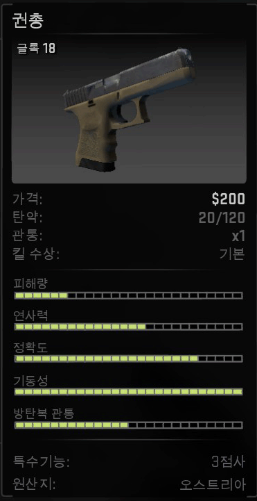
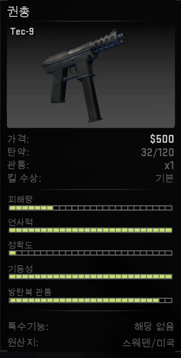
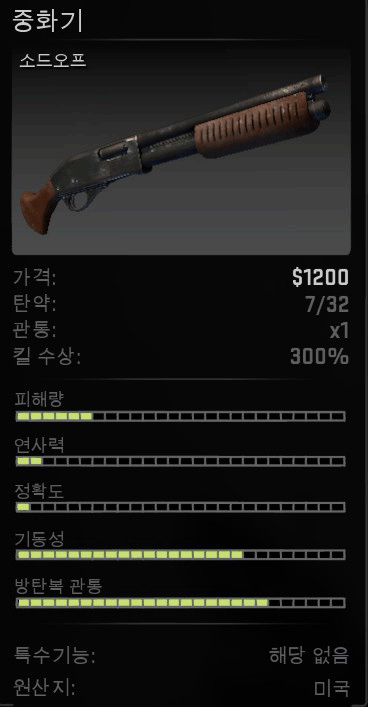
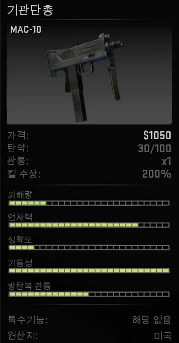
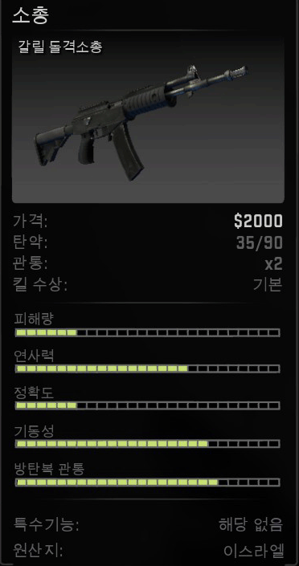
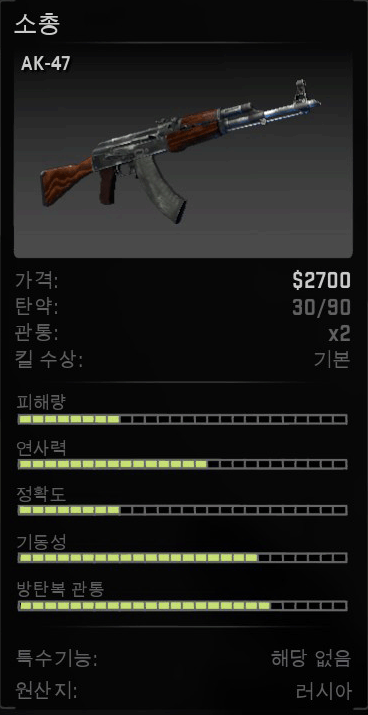
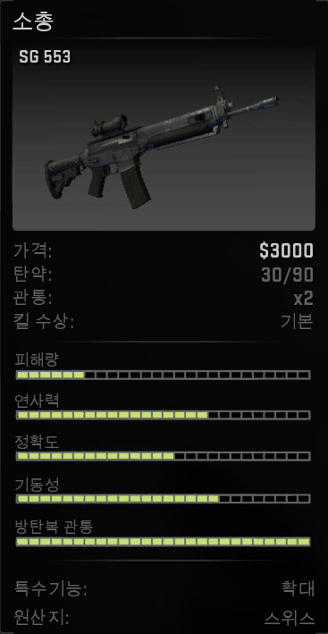
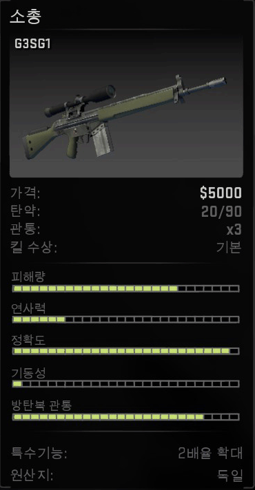

시작 하기에 앞서 킬 수상에서 %가 붙는것도 있고, 기본도 있는데 기본은 300달러이며 %는 "300X해당%" 입니다.
이제 부터는 테러리스트만 살 수 있는 무기들을 보러 갑시다!!

언제나 나오는 테러의 벗이라고 말 할수 있는 글록입니다.
원래는 테러리스트(이하 테러),대테러부대(이하 시티)가 같이 살수 있었지만, 업데이트로 인하여 테러리스트 전용 무기가 되었습니다.
특수 기능은 마우스 오른쪽 버튼를 누르면 3점사를 사용이 가능하지만 엄청난 반동으로 중거리에선 추천을 하지 않습니다.

이번작에서 새로 나온 텍9입니다.
반동은 심하지만 그 댓가로 데미지가 엄청나게 세서 방탄복을 입으면 3~4방, 없으면 2~3방으로 잡을수 있습니다.

이번 작 에서 시티 전용무기인 맥-7과 함께 나온 소드오프입니다.
펌프 액션이지만, 빠르게 펌핑이 되어서, 빠르게 쏠 수 있습니다.
왜 이렇게 피해량이 낮아? 라고 생각할수 있지만, 모든 샷건류는 1발안에 8발이 있습니다. 즉, 한번 누를때마다 8발이 나가는 셈이죠.

거의 아무도 안 쓰는 비운의 무기 맥10입니다.
음, 솔직히 말해서 저도 이 무기는 안 씁니다.
하지만, 상대방이 돈이 없어서 세이브(다음 라운드를 위하여, 이번 라운드에 무기를 포기하고, 돈을 저축하는것)하면, 대부분은 방탄복이 없으니깐
꽤 짭짤하게 돈을 법니다.

ak-47를 못 살때 대체품인 갈릴 입니다.
ak를 사고 싶지만, 돈이 없고, 그렇다고 세이브 하기에는 팀원들 눈치가 보일때 이걸 드면 좋습니다.
ak-47보다 작은 반동과 5발 더 많은 탄약(단 총 탄약은 같습니다.)이 당신의 돈을 벌어 드릴겁니다.

네, fps게임을 한번이라도 했다면 다 알 에케가 나왔습니다.
단, 반동은 "소총"류중 가장 세기 때문에 반동 조절을 잘 해야 합니다. 하지만 그 만큼 피해량은 최고 입니다.

반자동 소총으로 제가 좋아하는 총 중 하나입니다. 오른쪽 버튼을 누르면 스코프를 통해서 줌을 할수 있습니다.
이 총의 장점은 중거리에서도 스나이퍼를 만나도 숨어 다니지 않을수 있습니다.

절대적인 밸런스 파괴 무기 일명 딱딱이라고 불립니다.
일단, 반 저격소총 이어서 여러번 계속 쏠수 있습니다. 이러면 밸런스 파괴라는 호칭이 이상하다고 생각하지만
얘는 대테러 전용 무기에 있는 scar-20이랑 함께 그냥 사기에요 그냥 사기!! 최소한 awp는 빗나가면 한번의 기회가 있지만, 이건 기회라는게 없어요!